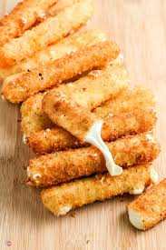

Easy Mozzarella Sticks

Description
Another quick and easy recipe for ant occasion.
Need a cool appetizer for your guests? Or are you just in the mood for a cheesy late night snack?
This recipe's got you covered. Here's what you'll need:
- String Cheese
- Eggs
- Flour
- Seasoned Bread Crumbs
- Cooking Oil
How to:
- Have your eggs, flour, and bread crumbs in seperate bowls.
- Pre heat your cooking oil.
- In this order, dip your string cheese in the eggs, then flour, then bread crumbs.
- Fry until golden.
Those Mozz Sticks look delicious!